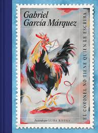
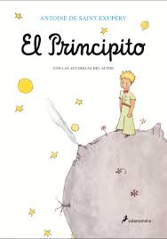

Explora, elige y enamórate de nuevas historias
Reseñas, guías de lectura y recomendaciones para todos los gustos.
Ver novedadesNovedades
Dos libros destacados del mes.

La metamorfosis
Catálogo
Explora por género.
Drama

El coronel no tiene quien le escriba
$18,00
La metamorfosis
$16,00

La virgen de los sicarios
$19,00
Memoria de mis putas tristes
$17,00
Satanás
$20,00

La ciudad y los perros
$22,00
Romance

El amor en los tiempos del cólera
$19,90
Memoria de mis putas tristes
$17,00

Cien años de soledad
$21,00

Orgullo y prejuicio
$18,99
Triller

El jardín de las mariposas
$16,50
Satanás
$20,00

Crónica de una muerte anunciada
$19,50

El psicoanalista
$21,99
Realismo
El coronel no tiene quien le escriba
$18,00
La virgen de los sicarios
$19,00
Satanás
$20,00

El túnel
$18,50
Ciencia ficción

All Tomorrows
$17,00

Viaje al centro de la Tierra
$16,99

1984
$19,99

Fahrenheit 451
$18,99

Los juegos del hambre
$24,99
Fantasía

El principito
$16,99

El diablo en la botella
$15,99
Cien años de soledad
$21,00

El señor de los anillos
$28,99

Harry Potter y la piedra filosofal
$22,99

El nombre de la rosa
$20,00
Realismo mágico

Pedro Páramo
$21,99

La casa de los espíritus
$23,00

Rayuela
$22,00
Misterio

La sombra del viento
$19,99
El nombre de la rosa
$20,00
El psicoanalista
$21,99
El jardín de las mariposas
$17,99
Distopía
1984
$19,99
Los juegos del hambre
$24,99
Gótico

El retrato de Dorian Gray
$18,99
Terror

It
$26,99
Autores destacados
Haz clic en cualquier autor para conocer su biografía.
Gabriel García Márquez
Nació en Colombia (1927-2014); Nobel de Literatura (1982). Autor de novelas emblemáticas como Cien años de soledad.

Franz Kafka
Escritor nacido en Praga (1883-1924); pionero de la narrativa existencial.

Fernando Vallejo
Novelista colombiano (1942-); conocido por narrativas sobre violencia urbana.

Mario Mendoza
Novelista colombiano (1964-); explorador de psicología criminal.

Mario Vargas Llosa
Novelista peruano (1936-); premio Nobel de Literatura 2010.

Ernesto Sabato
Escritor argentino (1911-2011); explorador del existencialismo.

Juan Rulfo
Escritor mexicano (1917-1986); pionero del realismo mágico.

Julio Cortázar
Escritor argentino (1914-1984); maestro del relato experimental.

Carlos Ruiz Zafón
Novelista español (1964-2020); maestro del misterio literario.

George Orwell
Escritor británico (1903-1950); crítico del totalitarismo.

Ray Bradbury
Escritor estadounidense (1920-2012); visionario de ciencia ficción.

Umberto Eco
Intelectual italiano (1932-2016); semiólogo y novelista.

Jane Austen
Novelista británica (1775-1817); maestra de la ironía social.

Isabel Allende
Novelista chilena (1942-); autora multigeneracional mágica.

Suzanne Collins
Novelista estadounidense (1962-); autora de 'Los juegos del hambre'.

Julio Verne
Escritor francés (1828-1905); pionero de la ciencia ficción.

J.R.R. Tolkien
Escritor británico (1892-1973); creador de mundos épicos.

J.K. Rowling
Novelista británica (1965-); creadora del universo Harry Potter.

Antoine de Saint-Exupéry
Piloto y escritor francés (1900-1944); autor de 'El principito'.

Robert Louis Stevenson
Escritor escocés (1850-1894); maestro de aventuras morales.

Oscar Wilde
Escritor irlandés (1854-1900); maestro del ingenio y lo oscuro.

Stephen King
Novelista estadounidense (1947-); maestro del horror moderno.

John Katzenbach
Novelista estadounidense (1950-); experto en suspenso psicológico.
Recursos
- Guías de lectura por género
- lee a tu gusto
- informate sobre tus libros